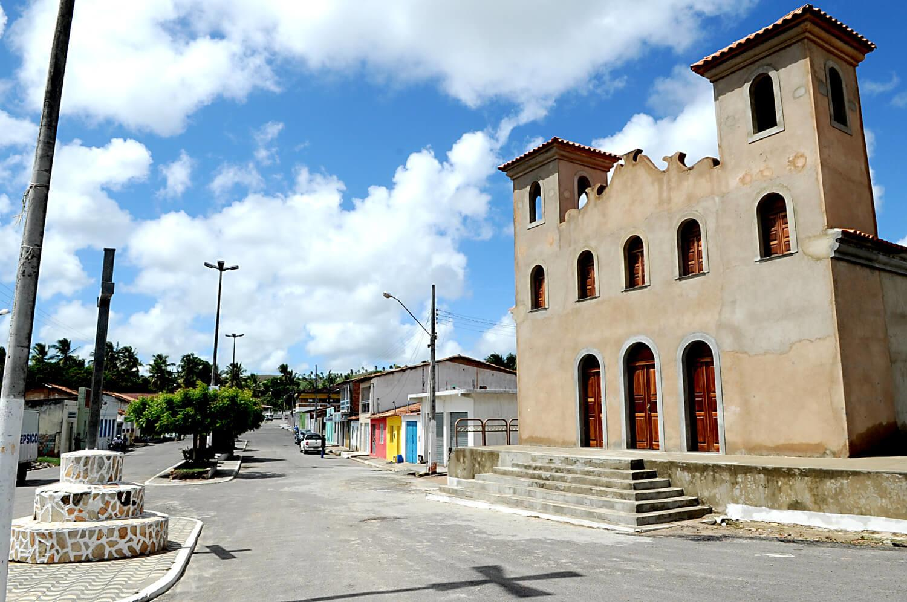

General Maynard
História
Segundo o domínio popular, que localiza a história da Vila de Marcação muito antes de sua emancipação e renomeação para General Maynard, o povoado originou-se de um marco de divisão das terras de Japaratuba com o Catete, nos primeiros anos do século XIX. A divisão foi feita às margens do Rio Papatu, hoje denominado Japaratuba.
Os antigos moradores afirmam que por esse local passavam tropeiros, que viajavam de Santo Amaro, Laranjeiras, Maruim e até mesmo Aracaju para Propriá, e convencionaram o marco como ponto de encontro, por isso o nome Marcação.
O local não era totalmente despovoado, já existiam vários engenhos de açúcar, mas o aglomerado urbano só foi realmente formado com as pessoas que chegavam de outros municípios através da estrada que cortava o terreno que mais tarde se tornaria um povoado.
Aos poucos foram aparecendo os casebres. Nessa época Marcação não passava de uma pequena povoação de casas à margem de uma estrada, mas até hoje ainda existem moradores que descendem das primeiras famílias que resolveram fixar-se no local. Entre a população local, ainda podem ser encontrados descendentes das famílias Costa, Espírito Santo, Figueiras, Bomfim, Muniz Barreto, Ismerim e Gonçalo Vieira.
No livro ‘Uma experiência da colonização na Cotinguiba sergipana’, do historiador Agamenon Guimarães de Oliveira, existe outra versão para o surgimento de Marcação. Segundo ele, o povoado nasceu no final do século XVIII, fase de ascensão do açúcar, quando os fazendeiros aproveitavam para utilizar o rico solo de massapê para fazer seus plantios na região, e os trabalhadores e comerciantes, que dependiam da economia dos engenhos, instalavam-se nas proximidades.
fonte: https://cidades.ibge.gov.br/brasil/se/general-maynard/historicoDados Gerais de acordo com o IBGE
| Prefeito (a) | Valmir De Jesus Santos |
| Vice-Prefeito (a) | Rodrigo Melo Sobral |
| Site do município | https://www.ibge.gov.br/cidades-e-estados/se/general-maynard.html |
| Área territorial | 19,793 km² |
| População estimada | 3.421 pessoas |
| Densidade demográfica | 172,83 hab/km² |
| IDHM | 0,645 |
| PIB per capita | R$ 10.800,66 |